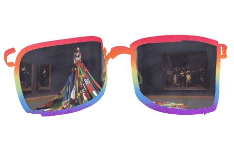

One thing I’ve been noticing, just from watching people and checking in with myself, is that pride shows up everywhere, no matter who you are or where you’re from. It’s kind of wild how universal it is. You can literally see it in someone’s posture: the lifted chin, the relaxed confidence, that small shift in how they move after accomplishing something. Nobody teaches us that; it’s just built in.
Pride comes from all kinds of moments too, finally mastering something hard, getting through a challenge, or being part of something bigger than yourself. And it doesn’t matter if it’s a student passing exams in Kenya, an athlete winning in Japan, or a parent watching their kid succeed in Mexico. That warm “I really did that” feeling hits the same everywhere. Every culture has its own way of celebrating accomplishment: graduations, ceremonies, promotions, medals. Even when the traditions look different, the message is the same. You matter, you achieved something, and people see you. Pride isn’t just individual either; it shows up in how people talk about their heritage, their community, their family, their sexuality, or the groups they belong to.
Even though languages describe pride differently, every single one still has a word for it because it’s essential to how humans understand themselves. And you can recognize it instantly: a craftsperson admiring their work, a graduate in their cap and gown, someone wearing traditional clothing that connects them to their roots. To me, pride and joy go hand in hand. Joy is about appreciating the good in our lives, and pride is about recognizing our worth and the effort behind it. Together, they remind us that even with all our cultural differences, we’re all trying to find meaning, connection, and a sense of accomplishment in really similar ways.